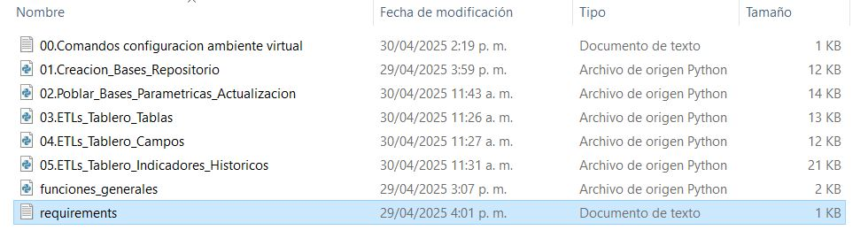

Instalación y Configuración del Entorno¶
Este apartado detalla los pasos necesarios para configurar un entorno funcional que permita la implementación y ejecución de los procesos de carga, transformación y análisis de datos utilizados en el presente proyecto. El objetivo principal es garantizar una instalación uniforme de herramientas y dependencias, configurar correctamente las conexiones a las bases de datos y estructurar el entorno para el óptimo funcionamiento del Repositorio Centralizado y el Modelo Analítico.
Pasos para la Configuración del Entorno¶
1. Instalación de Herramientas Necesarias¶
Versionamiento de Herramientas¶
Las ETLs se desarrollaron en python, SQL server y Power Query de acuerdo a las definiciones realizadas entre los equipos en la mesa de trabajo de febrero de 2025
1.1 SQL Server¶
Requisitos:
- Versión 2019
- Disponible a mayo de 2025 en el siguiente enlace: Descargar SQL Server 2019.
1.2 SQL Server Management Studio (SSMS)¶
Requisitos:
- Versión 20.1.10.0 o posterior.
- Disponible a mayo de 2025 en el siguiente enlace: Descargar SSMS.
1.3 Python¶
Requisitos:
- Versión 3.11.5 o posterior.
- En distribuciones Windows disponible en la tienda de Microsoft. Para otras distribuciones consultar el sitio oficial en el siguiente enlace: Consultar Sitio Oficial Python
1.4 Power BI¶
Requisitos:
- Versión 2.139.2054.0 64-bit (enero de 2025)
- Se recomienda manejarlo en distribuciones Windows, para las cuales está disponible en la tienda de Microsoft.
2. Creación del Entorno Virtual¶
Un entorno virtual permite organizar y aislar las dependencias necesarias para este proyecto. Siga estos pasos:
1. Cree un entorno virtual ejecutando el siguiente comando:
python -m venv env
2. Active el entorno virtual:
En Windows:
env\Scripts\activate
En Linux/macOS:
source env/bin/activate
3. Instalación de Dependencias¶
Una vez activado el entorno virtual, instale las librerías necesarias. Estas librerías junto con sus versiones se encuentran en el archivo requirements.txt disponible en la carpeta 01.Repositorio\02.Scripts_Python.

Archivo requirements.txt en la carpeta carpeta 01.Repositorio\02.Scripts_Python
A continuación, se presentan las librerías y las versiones indicadas en requirements.txt
- pandas==2.2.3
- numpy==2.2.4
- openpyxl==3.1.5
De esta manera, para instalar las librerías ejecutar el siguiente comando en la consola. En ambientes windows se recomienda usar PowerShell.
pip install -r requirements.txt
pip install libreria
Luego ver la versión de la librería con
pip show libreria
Consideraciones de uso¶
En esta sección se describen las condiciones y reglas de negocio mínimas requeridas para el adecuado funcionamiento del repositorio y modelo de analítico.
A. Se debe establecer una ruta específica donde se dispongan los archivos que van a ser cargados a la herramienta, la cual cumpla con los niveles de seguridad adecuados de tal manera que solo el personal autorizado tenga acceso a esta.
B. La información que ingresa al modelo debe estar alojada en las rutas preestablecidas y consolidada en las estructuras propuestas, manteniendo la integridad de las variables. Se debe tener en cuenta que no se recomienda hacer cambios a la estructura desarrollada.
C. La frecuencia de actualización está dada por las reglas de negocio definidas en el Documento de sugerencias en Gobierno de datos asociado con la calidad de los datos paramétricos de la historia clínica, donde se sugiere una frecuencia mensual.
Conclusión¶
Con estos pasos, el entorno estará listo para manejar los procesos ETL del proyecto. Al seguir estas indicaciones se asegura la configuración correcta para ejecutar los scripts de Python.